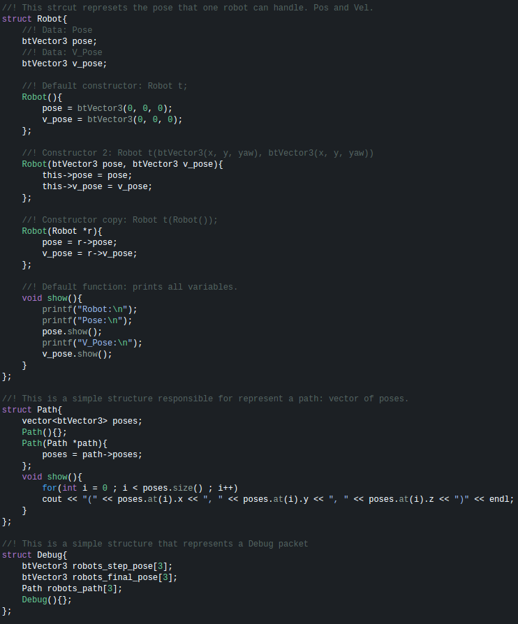

Entenda como funciona a comunicação entre os projetos
Como é realizado a comunicação entre os softwares
O VSS-SampleStrategy é um exemplo de como utilizar o VSS-SDK. Inicialmente o mesmo foi desenvolvido em C++, contudo, também é possível desenvolver utilizando: Java, Python, JavaScript, Go, Ruby, Objective-C, C#, Perl, PHP, Scala e Julia.
No branch master encontra-se um simples exemplo contendo dois métodos capazes de levar um robô para uma posição específica.
No branch mpp_thesis encontra-se um trabalho de dissertação, onde é planejado uma trajetória para todos os robôs e os mesmo são guiados por esses caminhos evitando colisões.
No branch simple encontra-se uma simples estratégia, contendo um máquina quatro estados para o atacante e uma movimentação básica para o goleiro e atacante.
Aqui encontra-se o funcionamento do VSS-SampleStrategy, isto é, como está organizado as classes, o que é necessário para desenvolver sua própria estratégia de jogo. O projeto busca utilizar vantagem do conceito de encapsulamento de programação.
A classe sample é uma classe abstrata a qual a classe strategy (nesta você cria seu código de estratégia) herda algumas funcionalidades e atributos importantes, começando pelos atributos privados, que não são acessados e nem precisam pelos desenvolvedores de uma estratégia em strategy.
Interface interface_receive guarda a interface de comunicação que recebe os estados do VSS-Vision ou VSS-Simulator, sendo esses vss_state::Global State global_state, essa interface é sempre utilizada. Interface interface_send só é utilizada caso o VSS-SampleStrategy esteja rodando no modo de comunicação com o VSS-Simulator, assim essa interface é reponsável por enviar os comandos dos robôs para o simulador, sendo esses vss_command::Global_Commands global_commands. Interface interface_debug apenas é utilizada caso o exemplo estaja rodando com o parâmetro -d e envia os comandos de debug visual, sendo eles vss_debug::Global_Debug global_debug.
Dos atributos que strategy recebe de sample, temos, ip_receive_state que guarda o ip da máquina onde o VSS-Vision ou VSS-Simulator está sendo executado, sendo esse localhost por padrão. ip_send_debug que guarda o ip da máquina em que o VSS-Viewer está sendo executado, sendo esse localhost por padrão. ip_send_command que guarda o ip on o VSS-Simulator está sendo executado, por padrão este também é localhost.
main_color guarda a cor da equipe, essa informação é base para que o sample abra a comunicação de maneira adequada. is_debug é um booleano que é passado pelo parâmetro de execução -d, esse define se o VSS-SampleStrategy vai abrir threads adicionais para o envio de informações de debug. real_environment guarda a informação passada pelo parâmetro -r, esse define se o mesmo irá enviar dados para um time de robôs reais ou para o simulador.
Os atributos common::State state, common::Command commands[3] e common::Debug debug fazem parte do namespace global e devem ser utilizados para receber os novos estados, enviar novos comandos e informações de debug.
Dos métodos que strategy recebe de sample, temos, init_sample() que deve ser chamado antes do início do funcionamento do VSS-SampleStrategy, receive_state() que deve ser chamado sempre antes de calcular as ações da estratégia, send_commands() que deve ser chamado sempre após o calculo de estratégia (caso o exemplo esteja sendo executado com o VSS-Simulator) e send_debug() que deve ser chamado após o calculo da estratégia.
Note que somente receive_state() trata de uma comunicação bloqueante, por isso caso algum módulo demore mais do que um estado chegue para o VSS-SampleStrategy haverá problema de acúmulo de mensagens. Por isso é aconselhavel que tal método possua uma thread só para o mesmo.O namespace global trata de definir todos as structs passivas, enums e funções úteis na maioria dos módulos do exemplo. Nesse são definidos, por exemplo: Robot, Path, Debug, State e Command.
Um Robô é definido como, uma pose (px, py e rz) e suas velocidades (vx, vy e vw), um caminho é definido como uma lista dinâmica de poses e um pacote de debug é definido como poses de passo (vetor de movimentação), poses finais e caminhos para cada robô do time.
Todos os estados enviados pelo VSS-Vision e VSS-Simulator são adicinados na variável da classe strategy State state, para acessar por exemplo a pose do robô zero do seu time, isto é, posição X, Y e rotação em Z, basta em qualquer método de Strategy chamar state.robots[0].pose, a mesma coisa para a pose do robô zero do time adversário, diferenciando somente state.robots[0+3].pose. Para enviar os comandos para o VSS-Simulator basta atualizar a variável Command commands[3] com os valores de velocidade das rodas esquerda e direita dos robôs [0], [1] e [2] para que os mesmos se direcionem para as poses objetivos.
A classe strategy abriga o ambiente de desenvolvimento para uma estratégia, nela você definir como bem entender a arquitetura da estratégia, basta sempre buscar os estados da variável de estado e enviar os comandos para o simulador com as variáveis de comando. Em outras palavras, você pode adicionar o que quiser no método calc_strategy() e para enviar dados para robôs reais, basta adicionar seu módulo de comunicação no else vazio utilizando os valores de commands[3].
Aqui encontra-se alguns aspectos técnicos sobre o funcionamento exemplo de estratégia, como, as bibliotecas utilizadas e o motivo de utiliza-las.
O VSS-SampleStratewgy recebe os estados de jogo e envia pacotes de debug via sockets, para isso é utilizado a biblioteca Google Procol Buffers (Protobuf) para serializar e deserializar as mensagens, pois dentre todas as opções existentes a mesma apresenta um dos melhores desempenhos e pode ser utilizada em diversas linguagens. A biblioteca é neutra em linguagem e neutra em plataforma, como XML, porém menor, mais rapido e simples.
Para receber os dados do VSS-Vision e VSS-Simulator o projeto abre uma inscrição em um multicast na porta 5555 e para enviar os pacotes de debug para o VSS-Viewer, é aberto um socket unicast na porta 5557 ou na porta 5558, para isso, é utilizado a biblioteca ZeroMQ. A biblioteca também busca ser neutra em linguagem e plataforma, assim o sistema de visão e todos os outros projetos estão aptos a rodar em múltiplos computadores com SOs diferentes. É possivel desenvolver um módulo de inteligência que se comunique com os projetos do VSS-SDK nas seguintes linguagens: C++, Java, Python, JavaScript, Go, Ruby, Objective-C, C#, Perl, PHP, Scala e Julia.
Como é realizado a comunicação entre os softwares
Como utilizar o VSS-Viewer e os outros projetos do VSS-SDK
Quais técnicas e bibliotecas o VSS-Vision utiliza
Quais bibliotecas o VSS-Simulator utiliza
Como controlar robôs utilizando qualquer joystick